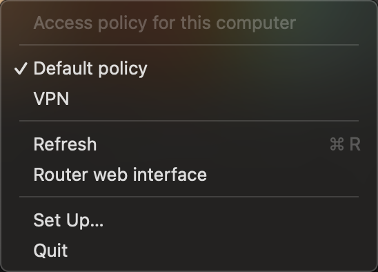

What it does
One click
The menu lists your Keenetic access policies with a checkmark on the active one. Pick another and the traffic switches.
Only this Mac
It changes the policy of one client on the router, by MAC address. Phones, TVs and everything else stay as they were.
Local only
It talks to the router over the local network with the same login as the web interface. The password lives in the macOS keychain.
Set up
- Install with Homebrew or the disk image.
- Run keenetic-policy --setup once: the router address, the admin login, the password and this Mac's MAC address.
- The icon appears in the menu bar: a globe for the default policy, the policy name otherwise.
How it works
It uses the router's RCI API — the same one the web interface uses. It logs in with the challenge-response scheme, reads the policy list and the client's policy, and posts the new one to /rci/ip/hotspot/host/policy. The default policy is not an object on the router but the absence of the attribute, so it is removed with {"no": true}.